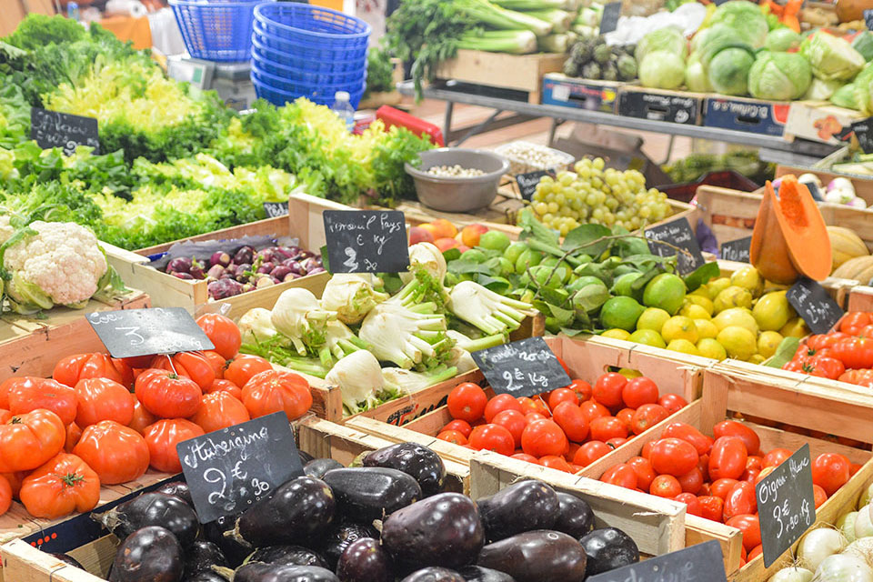

-

- 
-

Friday Variety Market
Day: Friday
Opening hours: 6am - 3pm
The Friday Variety Market dates back to 1604. It opens at 6am every week and runs until approximately 3pm. There are 300 market stalls selling a variety of products including: fruit, vegetables, antiques, books, clothes and fish. It's this assorted mix that attracts thousands of visitors each week. The fish section alone contains 23 fish stalls and holds the reputation for being the leading retail fish market on the island of Ireland.
City Food and Craft Market
Day: Saturday
Opening hours: 9am - 3pm
The Saturday Market has a fusion of tempting speciality foods from around the world as well as handmade crafts, flowers, plants and local photography, pottery, glass and metal work.
Enjoy the best food, tastes and smells brought by local producers including fish landed at Portavogie, pork from Cookstown, beef from Armagh, venison and pheasant in season, local organic vegetables. Continental and speciality foods include wild boar, tapas, cheeses, cured meats, teas and coffees from around the world, and delicious French pastries and crepes.
Sample the products or relax with a coffee and a newspaper while listening to some of the best local musicians as they play live.
Sunday Market
Day: Sunday
Opening hours: 10am - 4pm
This market is a mixture of the Friday and Saturday markets with a special emphasis on local arts and crafts, offering more local craftspeople the opportunity to show off their talents. You can also expect live music from local bands.
long with local, continental and specialty foods such as spices, chutneys and chocolates, you can expect scented candles, clothes, handmade jewellery, recycled goods, household goods, antiques, garden plants, souvenirs, health and beauty products.
2017 Awards
Winter Twilight Market - winner of the VM Christmas Awards 2017: Hospitality sector (Restaurants, Coffee Shops, Travel and Leisure)
Best Market Attraction - National Association of British Market Authorities
2016 Awards
Best Market 2016 - Observer Food Monthly Awards
Twilight Market - winner of Tourism NI award for Market Innovation